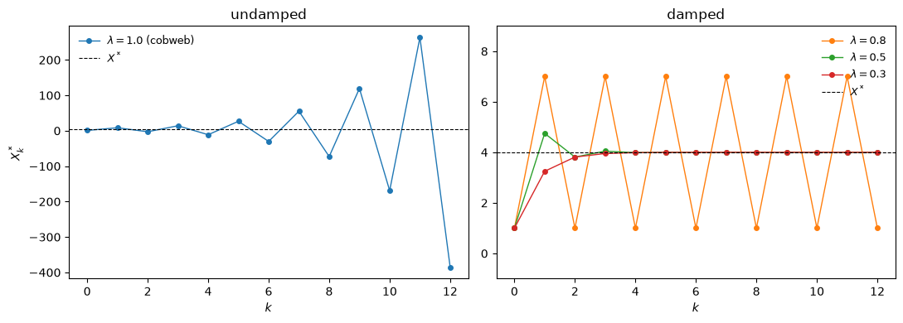
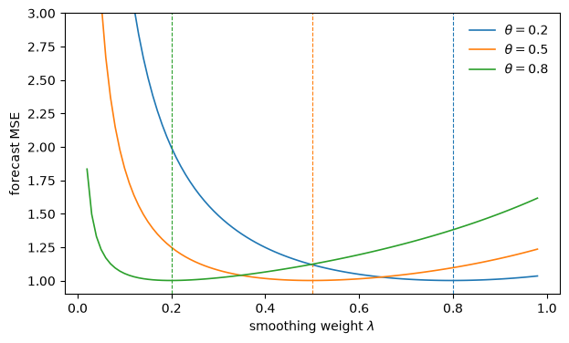
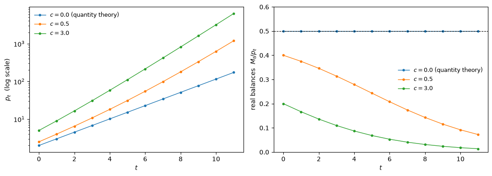
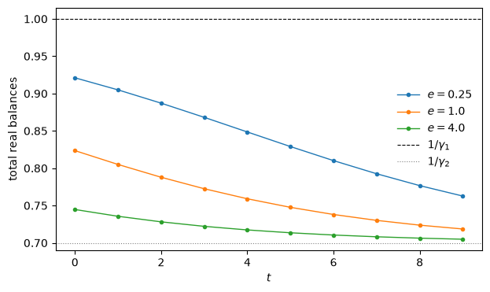

89. 一种奇特的有限理性定义#
89.1. 概览#
本讲开启了一个系列，该系列基于 Sargent [1993] 关于宏观经济学中有限理性的著作，反映了20世纪80年代末和90年代初的一种观点。
那些年，苏联解体，原华沙条约国家正在重新安排它们的政治经济体制。
对这些国家来说，那确实是现代动态宏观经济学技术意义上的体制转变。
在博弈论、宏观经济学和一般均衡理论方面，两代关于经济动态的研究已经产生了拥抱理性预期假设的理论，这些模型旨在理解人们面对他们已经经历过很多次的反复出现的情形的环境。
20世纪90年代初东欧正在进行的体制转变并非如此。
那里的人们面对的是前所未有的机遇、新的且定义不清的规则，以及每天为弄清楚最终将支配贸易和生产的机制而进行的努力。
拥有良好市场经济模型的经济学家们拥有大量均衡理论，描述了一个体系一旦完全适应了一套新的、连贯的规则和预期后将如何运作。
但他们对从苏联体制向市场经济转变的动态知之甚少。
他们可能持有关于如何管理这种转变的偏见和轶事，但没有经过实证检验的正式理论。
在这种背景下，一些经济学家冒险进入了 Sims [1980] 所称的非理性预期和有限理性的”荒野”。
其目的一部分是构建转变动态的理论，一部分是理解均衡动态本身的性质，还有一部分是研究那些永远不会稳定下来的体系。
本系列跟随 Sargent [1993] 一起，深入到那片荒野之中。
89.1.1. 理性预期赋予人们的知识#
要看清有限理性退却的是什么，先从理性预期说起，它有 两个 要求：
个体理性 — 每个人造主体的行为都在其感知约束条件下最大化一个目标函数。
相互一致性 — 体系中每个人所感知的约束彼此一致。
第二个要求就是穆思的理性预期假设。
在一个经济体中，一个人的决策是另一个人约束的一部分，因此一致性要求每个人对其他所有人的决策、决策过程和信念都持有正确的信念。
一致性也正是理性预期力量的来源：如果对感知没有任何限制，一个行为依赖于关于主观信念的任意假设的模型几乎可以产生任何结果。
但请看一看，一旦将模型应用于数据，这一要求赋予人们的东西是什么。
理性预期模型中的主体使用均衡概率分布来评估他们的欧拉方程。
而这些正是研究他们的计量经济学家仍在努力估计的分布。
换句话说，这些主体已经以某种方式解决了经济学家才做了一半的推断问题。
89.1.2. 萨金特对有限理性的表述#
萨金特的 有限理性 研究纲领保留了个体理性，并以一种特定的方式退却了相互一致性，这一方式受到他对时间序列计量经济学的钟爱所驱动。
萨金特版本的有限理性研究纲领是：
我将建立具有”有限理性”主体模型的提议解读为一种呼吁，即通过将理性主体从我们的模型环境中驱逐，代之以行为类似计量经济学家的”人工智能”主体，从而退却理性预期的第二部分（感知的相互一致性）。这些”计量经济学家”进行理论构建、估计和调适，以试图了解在理性预期下他们本已知道的概率分布。
这些主体被塑造得更像那些建立模型的人：他们收集数据，形成理论，进行估计，并进行调适。
备注
在看到萨金特的手稿后，卡内基-梅隆大学的赫伯特·西蒙给萨金特写了一封信，表示他反对萨金特的表述，并建议萨金特不要将他所做的事情称为”有限理性”。
西蒙特别不喜欢萨金特让其模型内的主体表现得像计量经济学家，西蒙认为这种假装是荒谬的。
萨金特的提议使模型建立者的工作变得更难，而不是更容易。
撤回对共同理解环境的假设意味着我们必须用某种东西来取代它，而可供选择的合理选项有很多：
这个领域之所以是荒野，是因为研究者一旦决定放弃均衡理论化所提供的约束，就要面对如此多的选择。对均衡理论化的承诺通过要求将人建模为在共同理解的环境中的最优决策者，为他做了许多选择。当我们撤回共同理解环境的假设时，我们必须用某种东西来代替它，而合理的可能性有如此之多。
89.1.3. 该研究纲领的用处#
本书所追求的收益有三种。
有时，一群适应性主体学会表现得就好像它们具有理性预期一样，这使得均衡具有了它作为单纯假设时所缺乏的合理性。
有时，适应性主体收敛到众多均衡中的某一特定均衡，这就把学习变成了在理性预期均衡中进行选择的工具，同时也相应地成为计算那些手工难以求解的均衡的一种方法。
而更雄心勃勃的是，适应性动态还带来了一种关于转变本身的理论的希望——东欧改革者不得不盲目应对的均衡外调整过程。
正如本系列将会承认的那样，最后这个承诺是实现得最少的；选择和计算方面的收益则更为可靠。
本讲通过最尖锐的情形来处理选择问题：具有过多均衡的模型。
当一个理性预期模型有一系列连续的均衡时，经济的物理描述加上均衡概念本身无法确定会发生什么。
必须有其他东西来做出选择，而关于人们如何摸索走向均衡的合理描述正是这个”其他东西”的自然候选者。
我们构建了本系列其余部分会反复回到的两个货币模型示例，两者都具有一系列连续的理性预期均衡：
一个关于货币和价格的数量理论模型，其中价格水平只能被确定到一个任意的泡沫项；以及
一个双货币版本，其中汇率完全不受约束。
在此过程中，我们建立了一些工具——均衡的不动点观点、松弛算法、适应性预期，以及穆思的逆最优预测问题——后续讲座将利用这些工具驱逐理性主体，并代之以适应性主体。
89.1.4. 本系列的其余部分#
世代交叠货币经济中的适应性主体 — 萨缪尔森世代交叠货币模型中的适应性家庭。
最小二乘学习选择了理性预期动态所排斥的低通胀均衡，而实验室中的受试者也走向了同样的方向。
一个学习菲利普斯曲线的政府作为本讲的结尾。
学习、近似与均衡计算— 当状态是连续的、对每一种情形都做出单独反应已不可能时，主体必须放弃什么，这引出了近似均衡以及学习算法与均衡计算算法之间的相似性。
汇率不确定性、学习与实验 — 本讲的双货币模型，配以适应性主体，其中学习仅通过使汇率依赖于历史来固定汇率，而一个遗传算法经济体反而产生了永不消失的波动。
遗传算法与分类器系统 — 来自霍兰德和联结主义者的候选”大脑”目录：感知器、联想记忆、遗传算法、分类器系统。
人工智能主体中作为交换媒介的货币 — 分类器系统种群从零开始发现哪种商品将充当货币。
1993 年对宏观经济学中有限理性前景的展望 — 1993年对该研究纲领已取得成就和尚未取得成就的总结，以及关于此后三十年的后记。
让我们从一些导入开始。
import numpy as np
import pandas as pd
import matplotlib.pyplot as plt
89.2. 理性预期作为不动点#
89.2.1. 一个静态市场#
考虑一个由大量\(n\)家相同企业组成的竞争性行业。
每家企业选择产量\(x\)以最大化
其中\(c\)是一个递增的凸成本函数，价格由一条向下倾斜的逆需求曲线决定
其中\(X\)是平均企业的产量。
每家企业都是价格接受者和\(X\)接受者：它将\(p\)视为给定，并使边际成本等于价格，\(p = c'(x)\)。
将解写作\(x = g(p)\)。
代入需求曲线得到最优反应映射
它将假设的行业平均值\(X\)映射为一个优化企业相对于该假设值所选择的个体产量。
这是理性预期的第一个组成部分，也是个体理性所能提供的全部内容。
第二个组成部分——一致性——要求每个企业的选择与其假设的平均企业的选择相一致：
一个静态理性预期均衡就是最优反应映射的一个不动点。
举一个具体的例子，取一个二次成本函数\(c(x) = \tfrac{\gamma}{2} x^2\)和一条线性逆需求曲线\(p = a - b n X\)。
那么\(p = c'(x) = \gamma x\)给出\(x = p / \gamma\)，因此
a, b, n, γ = 10.0, 0.3, 5, 1.0
def h(X):
"Best response of an individual firm to an industry average X."
return (a - b * n * X) / γ
X_star = a / (γ + b * n)
print(f"X* = {X_star}")
print(f"h(X*) = {h(X_star)}")
print(f"h'(X) = {-b * n / γ}")
X* = 4.0
h(X*) = 4.0
h'(X) = -1.5
89.2.2. 计算不动点#
现在假设我们想在不求出闭式解的情况下找到\(X^*\)。
一个自然的出发点是松弛算法：保留对均衡的估计\(X^*_k\)，计算对它的最优反应，然后朝该最优反应移动一部分距离，
其中\(\lambda \in (0, 1]\)是一个松弛参数。
当\(\lambda = 1\)时，这就是对\(h\)的简单迭代，即经典的蛛网模型。
def relax(λ, X0=1.0, n_iter=12):
"Iterate the relaxation algorithm, returning the whole path."
path = np.empty(n_iter + 1)
path[0] = X0
for k in range(n_iter):
path[k + 1] = path[k] + λ * (h(path[k]) - path[k])
return path
fig, axes = plt.subplots(1, 2, figsize=(11, 4))
axes[0].plot(relax(1.0), 'o-', ms=4, lw=1, color='C0',
label=r"$\lambda = 1.0$ (cobweb)")
axes[0].set_title("undamped")
axes[0].set_ylabel("$X^*_k$")
for i, λ in enumerate((0.8, 0.5, 0.3)):
axes[1].plot(relax(λ), 'o-', ms=4, lw=1, color=f'C{i+1}',
label=fr"$\lambda = {λ}$")
axes[1].set_title("damped")
axes[1].set_ylim(-1, 9)
for ax in axes:
ax.axhline(X_star, color='k', lw=0.8, ls='--', label="$X^*$")
ax.set_xlabel("$k$")
ax.legend(frameon=False, fontsize=9)
plt.tight_layout()
plt.show()

图 89.1 Relaxation algorithm paths, undamped and damped#
朴素的蛛网模型\(\lambda = 1\)会发散，越来越远地振荡偏离它试图寻找的均衡；请注意左侧面板的坐标尺度。
由于\(h\)是仿射的，迭代 (89.3) 的乘子为\(1 + \lambda(h' - 1)\)，因此它当且仅当以下条件成立时收敛
λ_max = 2 / (1 + b * n / γ)
print(f"converges iff λ < {λ_max}")
print(f"λ = 1.0 : multiplier = {1 + 1.0 * (-b*n/γ - 1):+.2f} (diverges)")
print(f"λ = 0.8 : multiplier = {1 + 0.8 * (-b*n/γ - 1):+.2f} (period-2 cycle)")
print(f"λ = 0.5 : multiplier = {1 + 0.5 * (-b*n/γ - 1):+.2f} (converges)")
converges iff λ < 0.8
λ = 1.0 : multiplier = -1.50 (diverges)
λ = 0.8 : multiplier = -1.00 (period-2 cycle)
λ = 0.5 : multiplier = -0.25 (converges)
在\(\lambda = 0.8\)时，乘子恰好为\(-1\)：该方案将\(X\)映射为\(8 - X\)，因此永远在\(1\)和\(7\)之间弹跳，既不收敛也不发散，这就是右侧面板中未衰减的锯齿形。
充分衰减调整过程能使算法找到均衡；衰减不足则会使算法追逐自己的尾巴。
请记住这一观察结果。
本系列一个反复出现的主题是：如何进行调适，决定了你最终会到达哪里，甚至决定了你是否能够到达终点。
89.2.3. 适应性预期#
方程 (89.3) 最初是作为一个在迭代次数\(k\)下运行的算法引入的。
将\(k\)重新解释为日历时间\(t\)，将\(X^*_t\)解读为人们预期的值，将\(X_t = h(X^*_{t-1})\)解读为实际发生的情况，它就变成了一种预期形成理论：
这就是凯根 [Cagan, 1956] 用来研究恶性通货膨胀、以及弗里德曼用来研究消费的适应性预期方案。
预期是过去观测值的几何递减分布滞后，用单一自由参数\(\lambda\)来概括信念。
凯根和弗里德曼把\(\lambda\)当作一个自由参数，而没有解答为什么会有人以这种方式形成预期这一问题。
89.2.4. 穆思的逆问题#
Muth [1960] 着手通过反过来提出问题来消除\(\lambda\)这个自由参数。
他没有问某个给定环境暗示什么预测，而是问：在什么样的环境下，指数平滑会是最优预测？
他的答案是：当且仅当\(X_t\)遵循以下过程时，(89.4) 才是在每个视界\(k\)上对\(X_{t+k}\)的最小二乘预测：
其中\(\{\epsilon_t\}\)是一个鞅差序列，并且平滑权重与移动平均系数通过下式相关联：
备注
萨金特将 (89.4) 中的平滑权重和 (89.5) 中的移动平均系数都写作\(\lambda\)。
我们用\(\theta\)表示后者，以使\(\lambda = 1 - \theta\)这一关系保持清晰可见。
本讲中另有两个符号身兼两职，都是沿用原书的用法。
在下面的货币模型中，\(\lambda\)不再是一个增益，而是泡沫项的总增长率\(w_1/w_2\)，而\(\gamma\)不再是成本函数的曲率，而是将价格水平与货币供给联系起来的系数。
代码中将它们区分为 λ_m 和 γ_m。
预测规则从被预测的随机过程中继承了其唯一的参数。
让我们通过数值方法来验证这一点：模拟 (89.5)，在一系列权重上运行指数平滑，看看哪个权重预测效果最好。
def smoothing_mse(x, λ):
"One-step-ahead forecast MSE of exponential smoothing with weight λ."
f = np.empty_like(x)
f[0] = x[0]
for i in range(1, len(x)):
f[i] = λ * x[i] + (1 - λ) * f[i - 1]
return np.mean((x[1:] - f[:-1]) ** 2)
rng = np.random.default_rng(0)
T = 200_000
ε = rng.standard_normal(T + 1) # one shock path, shared across all λ
grid = np.linspace(0.02, 0.98, 97)
fig, ax = plt.subplots(figsize=(7, 4))
for θ in (0.2, 0.5, 0.8):
X = np.cumsum(ε[1:] - θ * ε[:-1]) # Muth's process
mse = np.array([smoothing_mse(X, λ) for λ in grid])
line, = ax.plot(grid, mse, lw=1.2, label=fr"$\theta = {θ}$")
ax.axvline(1 - θ, color=line.get_color(), lw=0.8, ls='--')
print(f"θ = {θ}: best λ = {grid[mse.argmin()]:.2f}, 1 - θ = {1 - θ:.2f},"
f" min MSE = {mse.min():.4f}")
ax.set_xlabel(r"smoothing weight $\lambda$")
ax.set_ylabel("forecast MSE")
ax.set_ylim(0.9, 3)
ax.legend(frameon=False)
plt.show()
θ = 0.2: best λ = 0.80, 1 - θ = 0.80, min MSE = 1.0024
θ = 0.5: best λ = 0.50, 1 - θ = 0.50, min MSE = 1.0024
θ = 0.8: best λ = 0.20, 1 - θ = 0.20, min MSE = 1.0024

图 89.2 Forecast MSE of exponential smoothing#
每条曲线恰好在其虚线\(\lambda = 1 - \theta\)处触底，且最小化后的均方误差在模拟噪声范围内等于\(\mathbb{V}[\epsilon_t] = 1\)——在该权重下的指数平滑就是条件期望，没有什么能比它做得更好。
穆思的这一练习是理性预期理念以其后来成为标准形式的首次应用：找出将一种预测方案与它所使用的环境联系起来的限制条件。
它也促使后来的研究者将预测方案本身当作定义均衡的对象来处理。
89.2.5. 动态类比#
当我们从静态模型转向动态模型时，正是这种情形发生了。
让每个主体选择一个序列而非单一行动，将有关总量状态的感知运动规律视为给定，
其中\(\{u_t\}\)是独立同分布的。
求解主体的动态规划问题得到个体决策规则 \(x_t = h(x_{t-1}, X_{t-1}, u_t)\)。
施加代表性主体确实具有代表性这一条件，即\(x_t = X_t\)，得出实际运动规律
从而得到从感知运动规律到实际运动规律的一个映射，
一个动态理性预期均衡是一个不动点\(H = T(H)\)，与 (89.2) 是同一个思想，只是现在这个不动点存在于函数空间中，而不是数值空间中。
松弛算法可原样照搬，
只不过现在它是根据预测与实际发生情况之间的差距，对整个预期生成函数进行修订。
本系列中的每一个学习模型都是 (89.7) 的某个版本，其中增益\(\lambda\)随时间递减，且修订是由数据驱动的，而不是对\(T\)的精确求值。
参见
理性预期均衡 针对一个卢卡斯-普雷斯科特行业模型详细展开了\(T\)映射，并计算了其不动点。
自指模型中的最小二乘学习 研究了当主体通过最小二乘法估计感知运动规律，同时其估计又反过来影响它们所处的体系时会发生什么。
89.3. 货币与价格#
我们现在构建后续所有内容的两个模型中的第一个。
一个代表性的货币持有者选择从\(t\)到\(t+1\)期携带的名义余额\(m_t\)，以最大化
其中\(p_t\)是当前价格水平，\(p^*_{t+1}\)是下一期预期的价格水平。
第一项是今天的消费，由于为获得货币而放弃的实际资源\(m_t / p_t\)而减少；第二项是明天的消费，由于该货币预期能够购买的商品\(m_t / p^*_{t+1}\)而增加。
对 (89.8) 关于\(m_t\)求导并整理，得到货币需求
当货币预期贬值得更快时，实际余额下降。
这是凯根 [Cagan, 1956] 用来研究恶性通货膨胀的需求函数的一个版本，它也出现在萨缪尔森 [Samuelson, 1958] 的世代交叠模型中。
要闭合该模型，我们需要一个关于\(p^*_{t+1}\)的理论。
假设货币供给以恒定的速率增长，
并且家庭相信价格水平与货币供给存在如下关系
其中\((\gamma, \lambda, c)\)是概括其信念的常数，均为正值，以使价格水平保持为正。
已知\(\mu\)，家庭预测 \(p^*_{t+1} = \gamma \mu M_t + \lambda^{t+1} c\)。
将该预测和 (89.11) 代入 (89.9)，得到货币需求作为当前货币供给的函数，
请注意在预期起作用的模型中的一个共同特征：货币的需求取决于其供给，因为今天的需求取决于明天的预期价格水平，而这被认为取决于明天的货币供给。
89.3.1. 均衡#
令需求等于供给，\(m_t = M_t\)，将 (89.12) 变为一个函数方程，
该方程必须在每个日期都成立。
匹配这两项得到
因此均衡价格水平为
参数\(\gamma\)和\(\lambda\)被确定下来了。
常数\(c\)却没有被确定。
每一个\(c \geq 0\)都是一个理性预期均衡，并且在每一个均衡中，根据 (89.11) 形成的预期总是恰好正确。
让我们数值验证一下，对于我们想尝试的任何\(c\)，残差确实为零。
w1, w2, μ, M0 = 2.0, 1.0, 1.5, 1.0
γ_m, λ_m = 1 / (w1 - μ * w2), w1 / w2
t = np.arange(12)
M = M0 * μ ** t
def price_path(c):
"Equilibrium price level for bubble constant c."
return γ_m * M + λ_m ** t * c
for c in (0.0, 0.5, 3.0, 25.0):
p = price_path(c)
p_star = γ_m * μ * M + λ_m ** (t + 1) * c # forecast of next period's price
m = w1 * p - w2 * p_star # money demand
print(f"c = {c:5}: max |demand - supply| = {np.max(np.abs(m - M)):.2e}")
c = 0.0: max |demand - supply| = 0.00e+00
c = 0.5: max |demand - supply| = 0.00e+00
c = 3.0: max |demand - supply| = 0.00e+00
c = 25.0: max |demand - supply| = 0.00e+00
在每一个日期，对于每一个\(c\)，货币需求都恰好等于货币供给。
89.3.2. 泡沫#
由于\(w_1 > w_2\)，(89.14) 中的第二项以总增长率\(\lambda = w_1 / w_2 > 1\)增长。
在\(c = 0\)的均衡中，价格水平与货币供给成比例：这就是教科书形式的数量理论。
在其他每一个均衡中，价格水平都携带一个与货币供给无关、且呈指数增长的成分：一个纯粹投机性的泡沫。
fig, axes = plt.subplots(1, 2, figsize=(11, 4))
for c in (0.0, 0.5, 3.0):
lab = f"$c = {c}$" + (" (quantity theory)" if c == 0 else "")
axes[0].plot(t, price_path(c), 'o-', ms=3, lw=1, label=lab)
axes[1].plot(t, M / price_path(c), 'o-', ms=3, lw=1, label=lab)
axes[0].set_yscale('log')
axes[0].set_ylabel("$p_t$ (log scale)")
axes[1].set_ylabel("real balances $M_t / p_t$")
axes[1].axhline(w1 - μ * w2, color='k', lw=0.8, ls='--')
axes[1].set_ylim(0, 0.6)
for ax in axes:
ax.set_xlabel("$t$")
ax.legend(frameon=False, fontsize=9)
plt.tight_layout()
plt.show()

图 89.3 Price levels and real balances under bubbles#
左侧面板显示，随着\(c\)的增大，价格水平与数量理论路径之间的偏离越来越大。
右侧面板显示了这对货币存量的实际价值造成的影响：当\(c = 0\)时，实际余额恒定在\(w_1 - \mu w_2\)；而当\(c > 0\)时，泡沫使实际余额稳步趋向于零。
沿着一条泡沫路径，总通胀率不断攀升，趋向于\(w_1 / w_2\)，根据 (89.9)，这恰恰是实际余额需求消失的速率。
经济体自我去货币化了，纯粹是因为每个人都预期它会这样。
infl = pd.DataFrame(
{f"c = {c}": price_path(c)[1:] / price_path(c)[:-1] for c in (0.0, 0.5, 3.0)},
index=pd.Index(t[1:], name="t"),
).round(3)
infl
| c = 0.0 | c = 0.5 | c = 3.0 | |
|---|---|---|---|
| t | |||
| 1 | 1.5 | 1.600 | 1.800 |
| 2 | 1.5 | 1.625 | 1.833 |
| 3 | 1.5 | 1.654 | 1.864 |
| 4 | 1.5 | 1.686 | 1.890 |
| 5 | 1.5 | 1.721 | 1.913 |
| 6 | 1.5 | 1.757 | 1.932 |
| 7 | 1.5 | 1.792 | 1.947 |
| 8 | 1.5 | 1.826 | 1.959 |
| 9 | 1.5 | 1.857 | 1.969 |
| 10 | 1.5 | 1.885 | 1.976 |
| 11 | 1.5 | 1.908 | 1.982 |
模型中没有任何东西——无论是偏好、技术还是政策——能说明我们究竟处于哪一个\(c\)之中。
正如这篇论文所说，理性预期”不是一个足以确定结果的、充分限制性的原则”。
89.4. 两种货币#
当我们允许存在一种以上货币时，不确定性会变得更严重。
沿用 Kareken and Wallace [1981]，保持 (89.9) 作为货币总量的需求，并假设存在两种法定货币，供给量分别为\(M_{1t}\)和\(M_{2t}\)，只要它们的回报率相等，它们就是完全替代品：
这种对持有哪种货币的无差异性，正是使汇率不确定的原因。
假设人们相信价格水平由下式给出
其中\(e\)是一个恒定的汇率。
要求以货币1单位计价的货币需求等于总供给\(M_{1t} + e M_{2t}\)，得到
这些方程之所以引人注目，正是因为它们所省略的内容。
汇率\(e\)完全不受约束——如果这些方程对某个\(e\)有解，那么它们对其他任何\(e\)都有解——而\(\gamma_1\)和\(\gamma_2\)的公式根本不涉及\(e\)。
举最简单的情形：两种货币供给固定，\(\mu_1 = \mu_2 = 1\)，设\(c = 0\)。
那么\(\gamma_1 = \gamma_2 = (w_1 - w_2)^{-1}\)，价格水平为常数。
w1, w2 = 2.0, 1.0
H1, H2 = 100.0, 120.0 # fixed supplies of the two currencies
γ_e = 1 / (w1 - w2)
def two_currency(e):
"Price levels and the real allocation at exchange rate e."
p1 = γ_e * (H1 + e * H2)
p2 = p1 / e
supply = H1 + e * H2 # total currency, in units of currency 1
demand = (w1 - w2) * p1 # money demand, with p* = p since prices are constant
return p1, p2, supply / p1, demand - supply
pd.DataFrame(
[two_currency(e) for e in (0.25, 0.5, 1.0, 2.0, 4.0)],
index=pd.Index([0.25, 0.5, 1.0, 2.0, 4.0], name="e"),
columns=["$p_1$", "$p_2$", "real balances", "excess demand"],
).round(4)
| $p_1$ | $p_2$ | real balances | excess demand | |
|---|---|---|---|---|
| e | ||||
| 0.25 | 130.0 | 520.0 | 1.0 | 0.0 |
| 0.50 | 160.0 | 320.0 | 1.0 | 0.0 |
| 1.00 | 220.0 | 220.0 | 1.0 | 0.0 |
| 2.00 | 340.0 | 170.0 | 1.0 | 0.0 |
| 4.00 | 580.0 | 145.0 | 1.0 | 0.0 |
每一行都是一个均衡。
随着\(e\)变化，名义价格水平的变动幅度很大。
由于\(e\)是货币2的一个单位以货币1的单位计价的价值，\(e\)越大意味着货币2越值钱，这会推高\(p_1\)并压低\(p_2\)。
但最后两列讲述了真正的故事：无论\(e\)为何值，总实际余额都是\(w_1 - w_2 = 1\)，市场恰好出清。
*在这些均衡中的每一个中，真实配置都是相同的。*模型确定了人们消费什么，以及货币存量能够购买到多少购买力；但它对两种货币之间的兑换比率完全没有任何说法。
这是一个困扰国际货币理论已久的问题的一个尖锐版本，而且它并非一个刀锋边缘的特例：它是一个连续统。
89.5. 我们的处境#
我们现在有了两个模型，在这两个模型中，理性预期对我们非常想预测的某件事情保持沉默。
对此有三种应对方式。
第一种是不断给环境增加限制条件，直到均衡变得唯一为止。
第二种是宣称这种不确定性是这个世界的一个真实特征。
第三种——也是本系列所追求的——是问，当我们用适应性主体取代理性主体并观察体系走向何方时，会发生什么。
这是一种实质性的改变，而不是技术性的改变。
一个适应性主体并没有被赋予均衡；它拥有信念、修正信念的规则以及初始条件。
那些额外的对象恰恰是理性预期均衡条件未能确定的东西，因此一个由适应性主体构成的体系可以选出一个理性预期无法确定的结果。
本系列的其余部分认真对待这一想法，其结果以一种颇具启发性的方式呈现出好坏参半的局面。
在世代交叠货币经济中，最小二乘学习所选择的均衡，恰恰与理性预期动态所收敛到的均衡相反，而人类实验受试者站在适应性模型这一边。
在上述双货币模型中，适应性主体确实能够固定汇率，但只是通过使其依赖于初始条件来实现的。
学习算法的静止点恰好重现了这种不确定性，而选出某一结果的正是历史那只死去的手。
在一个北原-赖特搜寻经济中，适应性主体学会使用一种交换媒介，并选择基本面均衡而非投机性均衡，即便在理论表明投机性均衡是唯一均衡的参数取值下也是如此。
在每一种情形中，算法都提供了均衡概念未能提供的东西。
这究竟是关于经济体的一项发现，还是算法的产物，是本系列不断回到的问题，而 1993 年对宏观经济学中有限理性前景的展望 将给出一个定论。
89.6. 练习#
练习 89.1
松弛算法 (89.3) 对静态市场收敛，当且仅当\(\lambda < 2 / (1 + bn/\gamma)\)。
比率\(bn/\gamma\)衡量的是需求斜率相对于成本曲率的大小，因此一个需求陡峭、成本近似线性的市场，正是朴素蛛网模型（\(\lambda = 1\)）表现糟糕的市场。
请通过数值方法验证这一稳定性边界：对于一系列\(bn/\gamma\)的取值，找出使算法收敛的最大\(\lambda\)（在一个精细的网格上），并与解析预测进行比较。
解答 练习 89.1
def converges(slope, λ, n_iter=400, tol=1e-8):
"""Does the relaxation algorithm converge when h'(X) = -slope?"""
a_, X = 10.0, 1.0
for _ in range(n_iter):
X_new = X + λ * ((a_ - slope * X) - X)
if not np.isfinite(X_new) or abs(X_new) > 1e12:
return False
X, X_prev = X_new, X
return abs(X - X_prev) < tol
λ_grid = np.linspace(0.01, 1.5, 300)
rows = []
for slope in (0.5, 1.0, 1.5, 2.0, 4.0):
ok = [λ for λ in λ_grid if converges(slope, λ)]
rows.append((slope, max(ok) if ok else np.nan, 2 / (1 + slope)))
pd.DataFrame(rows, columns=["$bn/\\gamma$", "largest $\\lambda$ found",
"$2/(1 + bn/\\gamma)$"]).round(3)
| $bn/\gamma$ | largest $\lambda$ found | $2/(1 + bn/\gamma)$ | |
|---|---|---|---|
| 0 | 0.5 | 1.296 | 1.333 |
| 1 | 1.0 | 0.972 | 1.000 |
| 2 | 1.5 | 0.777 | 0.800 |
| 3 | 2.0 | 0.648 | 0.667 |
| 4 | 4.0 | 0.389 | 0.400 |
数值边界始终位于解析边界的略下方，而这个差距并非网格间距造成的；它是该检验方法的一个真实特征。
当\(\lambda\)接近边界时，乘子趋近于\(-1\)，因此收敛变得任意缓慢，一个具有固定迭代次数和容差的检验会在真正边界之前就宣告失败。
这个差距的大小是可以预测的：在400次迭代和\(10^{-8}\)的容差下，只有当\(|1 - \lambda(1 + bn/\gamma)|^{400} \lesssim 10^{-8}\)时该检验才会通过，即只有当乘子的绝对值低于约\(\exp(-18.4/400) = 0.955\)时。
predicted = [(1 + 0.955) / (1 + s_) for s_ in (0.5, 1.0, 1.5, 2.0, 4.0)]
pd.DataFrame({"$bn/\\gamma$": [0.5, 1.0, 1.5, 2.0, 4.0],
"found": [r[1] for r in rows],
"predicted by the tolerance": predicted,
"true boundary": [r[2] for r in rows]}).round(3)
| $bn/\gamma$ | found | predicted by the tolerance | true boundary | |
|---|---|---|---|---|
| 0 | 0.5 | 1.296 | 1.303 | 1.333 |
| 1 | 1.0 | 0.972 | 0.978 | 1.000 |
| 2 | 1.5 | 0.777 | 0.782 | 0.800 |
| 3 | 2.0 | 0.648 | 0.652 | 0.667 |
| 4 | 4.0 | 0.389 | 0.391 | 0.400 |
请注意第一行：当\(bn/\gamma < 1\)时，边界超过1，因此朴素蛛网模型本身就能收敛，无需任何衰减。
衰减正是在陡峭市场中换取收敛的手段，市场越陡峭，所需的衰减就越多。
练习 89.2
均衡 (89.13) 的推导过程中并未检验它是否具有经济意义。
请通过找出当货币增长速度快于此时实际余额需求会出现什么问题，来说明货币均衡要求\(\mu < w_1 / w_2\)。
解答 练习 89.2
沿着\(c = 0\)的均衡，实际余额恒定为 \(M_t / p_t = \gamma^{-1} = w_1 - \mu w_2\)。
只有当\(\mu < w_1 / w_2\)时，这个值才为正。
如果货币增长得更快，(89.13) 仍然会”求解”该函数方程，但它要求家庭持有一个负数量的货币。
w1, w2 = 2.0, 1.0
μ_grid = np.array([0.5, 1.0, 1.5, 1.9, 2.0, 2.5])
with np.errstate(divide='ignore'): # γ is infinite exactly at μ = w1/w2
table = pd.DataFrame({
"$\\mu$": μ_grid,
"$\\gamma = (w_1 - \\mu w_2)^{-1}$": 1 / (w1 - μ_grid * w2),
"real balances $w_1 - \\mu w_2$": w1 - μ_grid * w2,
"monetary equilibrium?": np.where(μ_grid < w1 / w2, "yes", "no"),
}).round(3)
table
| $\mu$ | $\gamma = (w_1 - \mu w_2)^{-1}$ | real balances $w_1 - \mu w_2$ | monetary equilibrium? | |
|---|---|---|---|---|
| 0 | 0.5 | 0.667 | 1.5 | yes |
| 1 | 1.0 | 1.000 | 1.0 | yes |
| 2 | 1.5 | 2.000 | 0.5 | yes |
| 3 | 1.9 | 10.000 | 0.1 | yes |
| 4 | 2.0 | inf | 0.0 | no |
| 5 | 2.5 | -2.000 | -0.5 | no |
在\(\mu = w_1 / w_2 = 2\)时，对实际余额的需求降为零，\(\gamma\)则趋于无穷大；超过这一点后，两者都变为负值。
其直觉可以通过 (89.9) 来理解：只有当购买力的预期损失\(p^*_{t+1} / p_t\)小于\(w_1 / w_2\)时，家庭才会持有货币。
以速率\(\mu\)增长的货币会产生速率为\(\mu\)的通货膨胀，因此\(\mu \geq w_1 / w_2\)会将货币需求推向零，而这恰恰是泡沫均衡从下方渐近趋近的同一个边界。
练习 89.3
在双货币示例中，我们设定\(\mu_1 = \mu_2 = 1\)，并发现真实配置在每个汇率下都是相同的。
这一点是特殊的。
请用\(\mu_1 \neq \mu_2\)——比如\(\mu_1 = 1.0\)、\(\mu_2 = 1.3\)，配以\(w_1 = 2\)、\(w_2 = 1\)、\(M_{1,0} = M_{2,0} = 100\)以及\(c = 0\)——重复这一计算，并在最初几期内计算若干汇率下的总实际余额。
汇率\(e\)的选择是否仍然不影响真实配置？
解答 练习 89.3
w1, w2 = 2.0, 1.0
μ1, μ2 = 1.0, 1.3
γ1, γ2 = 1 / (w1 - μ1 * w2), 1 / (w1 - μ2 * w2)
t = np.arange(10)
M1, M2 = 100.0 * μ1 ** t, 100.0 * μ2 ** t
def real_balances(e):
p1 = γ1 * M1 + γ2 * e * M2
return (M1 + e * M2) / p1
pd.DataFrame({f"e = {e}": real_balances(e) for e in (0.25, 1.0, 4.0)},
index=pd.Index(t, name="t")).round(4)
| e = 0.25 | e = 1.0 | e = 4.0 | |
|---|---|---|---|
| t | |||
| 0 | 0.9211 | 0.8235 | 0.7447 |
| 1 | 0.9049 | 0.8050 | 0.7356 |
| 2 | 0.8871 | 0.7879 | 0.7282 |
| 3 | 0.8681 | 0.7725 | 0.7221 |
| 4 | 0.8485 | 0.7591 | 0.7173 |
| 5 | 0.8290 | 0.7476 | 0.7135 |
| 6 | 0.8101 | 0.7380 | 0.7105 |
| 7 | 0.7926 | 0.7301 | 0.7081 |
| 8 | 0.7767 | 0.7237 | 0.7063 |
| 9 | 0.7627 | 0.7186 | 0.7049 |
fig, ax = plt.subplots(figsize=(7, 4))
for e in (0.25, 1.0, 4.0):
ax.plot(t, real_balances(e), 'o-', ms=3, lw=1, label=f"$e = {e}$")
ax.axhline(1 / γ1, color='k', lw=0.8, ls='--', label=r"$1/\gamma_1$")
ax.axhline(1 / γ2, color='gray', lw=0.8, ls=':', label=r"$1/\gamma_2$")
ax.set_xlabel("$t$")
ax.set_ylabel("total real balances")
ax.legend(frameon=False)
plt.show()

不会。在货币增长率不相等的情况下，汇率会影响真实配置，而且这种配置甚至不再随时间保持恒定。
原因在于\(\gamma_1 \neq \gamma_2\)：这两种货币被赋予了不同的价值，因为人们预期它们会以不同的速率被稀释，因此货币存量的构成就变得重要起来，而\(e\)正是决定这种构成的因素。
由于货币2增长得更快，无论我们选择哪个\(e\)，它最终都会主导货币存量，实际余额都会从\(e\)的起始点开始收敛到\(1/\gamma_2\)。
因此，固定供给情形下纯粹的名义不确定性是一种刀锋边缘现象，但\(e\)本身的不确定性却并非如此：表中的每一个\(e\)仍然都是一个均衡。